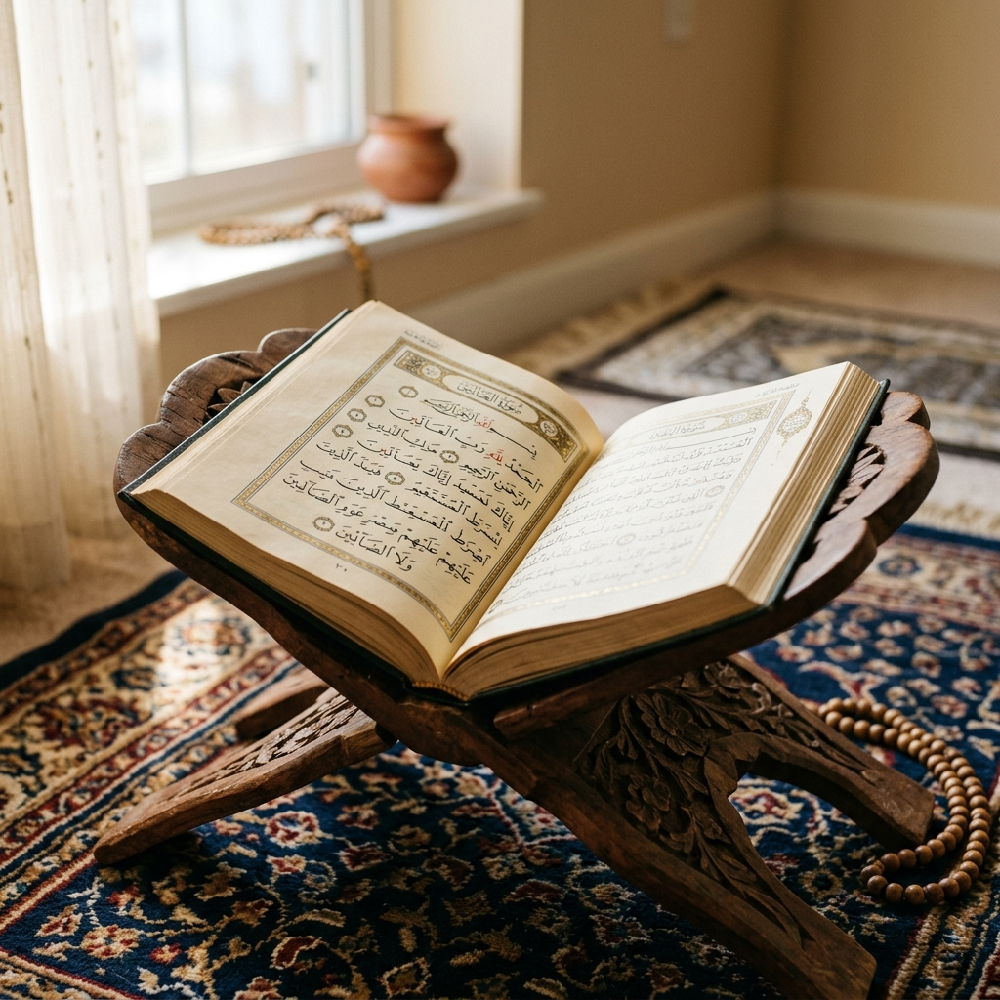

5 Tips Menjaga Hafalan Al-Qur'an agar Tidak Mudah Lupa

Menghafal Al-Qur'an adalah sebuah kemuliaan yang besar, namun menjaga hafalan tersebut (muraja'ah) agar tetap melekat kuat dalam ingatan adalah tantangan yang tidak kalah besar. Rasulullah ﷺ bersabda, "Jagalah Al-Qur'an ini, demi Dzat yang jiwaku berada di tangan-Nya, sungguh Al-Qur'an itu lebih cepat lepasnya daripada unta dari ikatannya." (HR. Bukhari).
Menjaga hafalan yang kuat (mutqin) tidak hanya membutuhkan kecerdasan akal, melainkan keistiqomahan, niat yang lurus, serta metode muraja'ah yang teruji secara konsisten. Para asatidz berpengalaman di PPTQ AL WAHYU merangkum 5 tips praktis yang bisa diterapkan dalam kehidupan sehari-hari:
"Mengulang hafalan (muraja'ah) bukanlah beban, melainkan momen bercengkrama yang indah dengan firman Allah SWT. Jadikan muraja'ah sebagai kebutuhan rohani harian kita."
5 Metode Muraja'ah Terbaik
Berikut adalah 5 tips penting yang dapat membantu menjaga hafalan Al-Qur'an agar tidak mudah lupa:
- Luruskan Niat karena Allah SWT: Keikhlasan hati adalah kunci keberkahan. Niatkan menghafal semata-mata untuk meraih ridha Allah SWT, bukan demi pujian atau pengakuan manusia. Hati yang bersih akan lebih mudah menerima dan menjaga cahaya Al-Qur'an.
- Buat Jadwal Muraja'ah yang Konsisten: Jangan menumpuk muraja'ah di akhir pekan. Buatlah rutinitas harian yang realistis, misalnya menyisihkan waktu 30-60 menit setelah shalat Subuh atau sebelum tidur untuk mengulang hafalan lama.
- Gunakan Metode Tikrar (Pengulangan Terencana): Ulangi ayat yang baru dihafal minimal 20 kali berturut-turut sebelum melanjutkan ke halaman berikutnya. Pengulangan berulang kali ini membantu memindahkan ingatan dari memori jangka pendek ke memori jangka panjang.
- Membaca Hafalan dalam Shalat Sunnah: Praktik terbaik untuk menguji kekuatan hafalan adalah dengan membacanya saat shalat tahajud atau shalat sunnah rawatib. Kesunyian malam membantu meningkatkan konsentrasi penuh pada ayat yang dibaca.
- Jauhi Kemaksiatan: Ilmu Al-Qur'an adalah cahaya, dan cahaya Allah tidak akan diberikan kepada pelaku maksiat. Jaga pandangan, pendengaran, dan lisan agar hati tetap jernih serta terjaga dari kelupaan.
Dengan menerapkan 5 tips di atas secara istiqomah serta diiringi doa restu orang tua dan bimbingan guru, insya Allah hafalan Al-Qur'an akan menjadi penjaga diri kita yang kokoh baik di dunia maupun di akhirat.